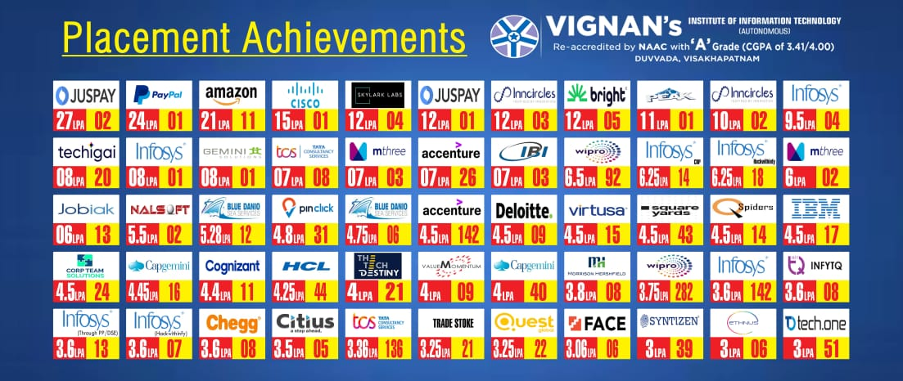

Campus Placements
| ACADEMIC YEAR |
STUDENTS ADMITTED |
STUDENTS PLACED |
PLACEMENT % |
| 2016 - 2017 |
1010 |
650 |
64.36 |
| 2017 - 2018 |
1154 |
549 |
47.57 |
| 2018 - 2019 |
1107 |
771 |
69.65 |
| 2019 - 2020 |
1131 |
881 |
77.9 |

© 2020 VIGNAN'S INSTITUTE OF INFORMATION TECHNOLOGY | ALL RIGHTS
RESERVED | Contact Us